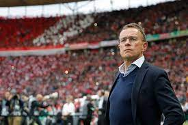
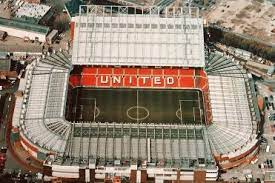
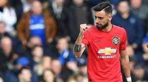
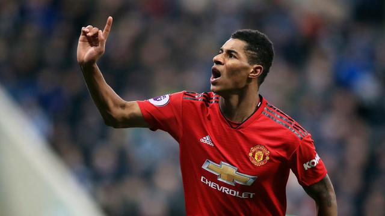

Ralf Rangnick adalah manajer, eksekutif, dan mantan pemain sepak bola profesional berkebangsaan Jerman yang saat ini menjabat sebagai manajer sementara klub Liga Premier Manchester United.
Old Trafford adalah sebuah stadion sepak bola yang berlokasi di Old Trafford, Greater Manchester, Inggris, dan merupakan markas klub sepak bola Manchester United (MU). Dengan kapasitas sekitar 76.000 kursi, stadion ini merupakan stadion terbesar ketiga dan stadion sepak bola terbesar kedua di Inggris setelah Stadion Wembley , serta stadion kesembilan terbesar di Eropa.
Cristiano Ronaldo lahir 5 Februari 1985) adalah seorang pemain sepak bola profesional asal Portugal yang bermain sebagai penyerang untuk klub Liga Utama Inggris, Manchester United dan juga kapten untuk tim nasional Portugal.
Bruno Miguel Borges Fernandes adalah seorang pemain sepak bola asal Portugal yang saat ini bermain sebagai gelandang di tim Manchester United F.C. dan tim nasional sepak bola Portugal.
Marcus Rashford MBE (lahir 31 Oktober 1997) adalah seorang pemain sepak bola profesional untuk Manchester United dan tim nasional Inggris. Rashford mencetak dua gol pada pertandingan debutnya bersama tim senior menghadapi Midtjylland di UEFA Europa League. Dia juga mencetak gol melawan Arsenal saat debut di Premier League. Selama berseragam dengan United, Rashford telah menjuarai FA Cup, EFL Cup, FA Community Shield dan UEFA Europa League.
NAMA : Muhammad Hafizh Arrosyidu
NIM : 10121065
KELAS : IF 2